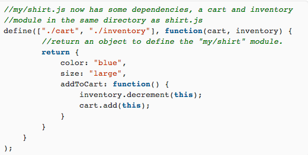
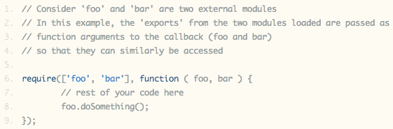

RequireJS
A JavaScript Module Loader
Presented by Nigam Patel / @nigam02
Most Projects Start Like This:
JavaScript files are included as HTML script tags
'
What's the problem?
- JavaScript tags block page rendering
- Each file can potentially be dependent on other files
- Not Every JavaScript file is needed when the page first loads
- No Encapsulation, Namespace pollution
Solution
Asynchronous Module Definition
- Modules are encapsulated.
- Create and reuse code from different part of the site.
- Structured, clean codebase.
- Async loading, managed dependencies.
- Lazy load modules (stuff not used by the user yet can be loaded in background when needed on demand).
- Not a technology, but a specification proposal.
2 important concepts
define() vs require()
Define()
Creates a module that can be used by other modules.define(id?, [dependencies]?, factory)

require()
When you only need to use modules, not create them.require([dependencies]?, factory)

config
baseUrl
Root path for module lookups.
waitSeconds
Number of seconds before timing out.
paths
Location of the modules or library.
shim
Libraries that don't support AMD, but you need to manage their dependencies.
Recap
Future - ES6 - Modules
Module definition
module [module ID] export [variable | function]Module dependency
import {[var | fn ]} from [module ID]Resources on require.js
What is AMD?Writing Modular JavaScript With AMD, CommonJS & ES Harmony by Addy Osmani
How to structure your app using require.js
Modular Javascript
James Burke's Blog
require.js 3 part series screencast by Cary Landholt
Other example for your script loading needs